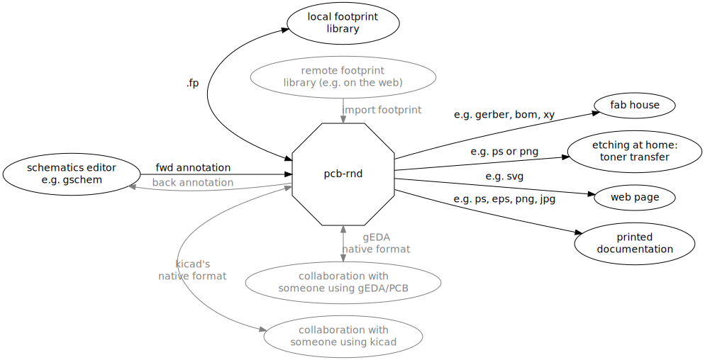

pcb-rnd is a highly modular, interactive Printed Circuit Board editor with a very long history .
The main purpose of pcb-rnd is to edit the geometry of the board. This includes board shape, copper shape, layer stackup, holes drilled, slots routed.
The input of the layout process is usually a netlist derived from schematics, and occasionally layouts drawn from scratch or created from schematic without importable netlist. Pcb-rnd can read different netlist formats and it can help the user to realize the given netlist in copper or to change the netlist and back annotate the changes. Pcb-rnd, however, does not display or edit schematics directly.
The output of pcb-rnd is most often a vector format (e.g. gerber RS274D), that is sent to a pcb fab house for manufacturing or is utilized for auto-fabrication. Pcb-rnd supports a variety of vector and raster output formats making it easy to print boards, publish them on web pages, and include them in documentation.
The typical workflows are:

Black flows are the most commonly used; grey flows are possible, fully supported but less often used in practice.